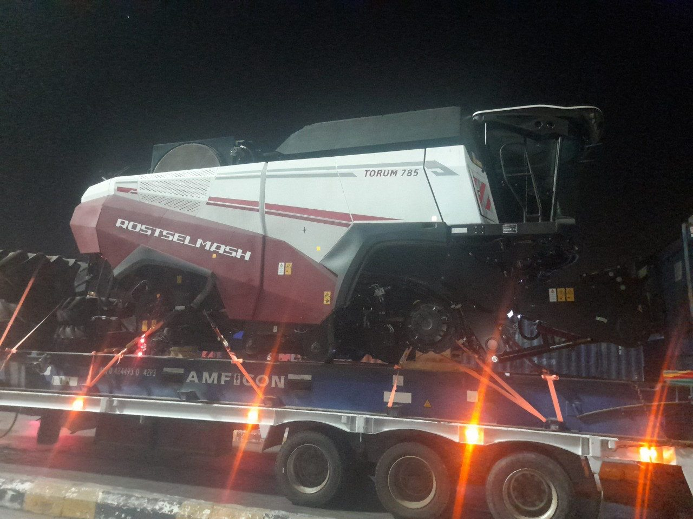

CASE 01
نقل حصادة ROSTSELMASH TORUM 785 — عملية ليلية
حصادة زراعية ذات أبعاد وارتفاع خاصين تتجاوز حدود التحميل المعتاد، فنُقلت على مقطورة كسّاحة منخفضة الأرضية لخفض الارتفاع الكلي. نُفّذت الحركة ليلًا لتقليل الازدحام على المسار، بإضاءة وتأمين كامل للشحنة من لحظة التحميل حتى التسليم.
- الشحنة: حصادة ROSTSELMASH TORUM 785
- المعدة: كسّاحة
- التأمين: ربط كامل بالأحزمة ومراجعة قبل التحرّك
- التوقيت: عملية ليلية بإضاءة ومرافقة
- الميناء: الإسكندرية